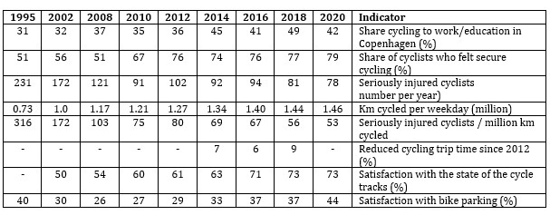

Tools Used
- Building Motivation Over Time
- Overcoming Specific Barriers
- Prompts
- Mass Media
- School Programs that Involve the Family
Initiated By
City of Copenhagen
Partners
- Cycling Embassy of Denmark
- Danish Cyclists’ Federation
Results
Between 1995 and 2018 the modal share for cycling increased relatively steadily from 31% to 49%, while the number of cyclists seriously injured per year fell from 231 to 78.
Case study PDF
Landmark Case Study
How Copenhagen Became a Cycling City
What makes a great cycling city? How did the medium-sized City of Copenhagen get its citizens to cycle to work / school 49% of the time? While topography and climate are significant influencers, safety, supportive infrastructure, and promotion also played key roles. Copenhagen increased cycling by making it safer, easier, and more convenient. This case illustrates the power of piloting alternative enhancements on an ongoing basis to further reduce barriers and increase benefits, based on regular surveys, traffic data and safety data. It also features a transparent planning process - the Bicycle Account – a research, evaluation, promotion, and citizen engagement tool used every two years since 1996. Designated a Landmark case study by our Transportation peer selection panel in 2022.
Background
Note: To minimize site maintenance costs, all case studies on this site are written in the past tense, even if they are ongoing as is the case with this particular program.
Copenhagen is Denmark's largest city and its capital. Roughly 600,000 people live within the municipal borders, and roughly 1.8 million people live in the broader Capital Region. The city is compact, flat, and graced by moderate weather. In addition, Denmark never had a car-manufacturing industry lobbying for car-friendly roads, and it has had relatively high taxes on cars.
Bikes were popular in Copenhagen in the 1900s. The first bike lane was constructed along Esplanaden in 1892 and in 1905 the Danish Cyclists’ Federation was created. By 1912 Copenhagen already had 50 km of cycle lanes and streets were dominated by streetcars and bicycles. Cycling continued as the main form of transport during World War I, due to strict gas rationing.
In the 1950s, as cars became more affordable, incomes rose, and the city expanded, cars started to dominate Copenhagen. New roads were built without bicycle infrastructure, and intersections became more car-focused (e.g. turning lanes were introduced to increase the flow of car traffic, which restricted bicycle paths at the intersection.) Car traffic increased dramatically. Together, all of these factors reduced cyclists’ sense of safety. By the 1960s, city planners generally considered bicycles outdated and were considering removing some of the existing bike lanes. The mode share for cycling fell to an all-time low of 10% in 1972.
Then things turned around with the 1973 global oil crisis, when oil prices quadrupled within a few days. Driving was temporarily banned on Sundays, which prompted many to consider Sunday the best day of the week. A rising environmental movement encouraged cycling as a practical alternative way of travelling. As membership in the Danish Cyclists Federation grew rapidly, it became more vocal and organised large demonstrations in Copenhagen demanding better cycling infrastructure and cycling safety. Another grassroots group painted white crosses on streets where a cyclist had been killed in traffic. Residents demonstrated outside Copenhagen’s City Hall, demanding that cycling also be prioritised.
The Danish Cyclist Federation proposed a citywide bike network, and Copenhagen started creating more bike lanes. During the 1980s, driven largely by civil servants, the city developed a bikeway plan and 240 km of cycle lanes, and worked to improve cycling safety at intersections. Between 1990 and 2000, the total distance traveled by bicycle increased by 40%, while related injuries dropped by 30%.
Then, in 2005, Copenhagen elected a new mayor on a platform that promoted cycling, and cycling promotion was on the political agenda for the first time. That year, the city started promoting cycling to residents, as a way of reducing congestion and pollution and improving quality of life.
Getting Informed
Copenhagen’s approach has been informed by its citizens and many experts over time and was originally based on the plan proposed by the Danish Cyclist Federation. Because of its focus on continuous improvement and evaluation, the city over time piloted and fine-tuned many enhancements before replicating them more widely.
The cornerstone of the city’s transparent planning process was its Bicycle Account – a research, evaluation, promotion, and citizen engagement tool that was used every two years, starting in 1996. Here’s how the Bicycle Account is described in its 2016 report. “The Bicycle Account is a biennial assessment of the City of Copenhagen’s efforts to boost cycling. The Account surveys the city's cycling initiatives, analyzes Copenhageners' own rating of Copenhagen as a cycling city, and discusses other factors that have an impact on cycling development. This year’s Bicycle Account is primarily based on 2016 figures which among other things are built on telephone interviews with 1,008 randomly selected Copenhagen residents and include data from the Danish National Travel Survey published by the Technical University of Denmark. The Bicycle Account 2016 is the 12th Bicycle Account in a row. The account is primarily addressed to Copenhageners, but also serves as an inspiration to cities wishing to optimise the cycling potential of their city. For the City of Copenhagen the Bicycle Account serves as an important tool in its efforts to make Copenhagen an even better cycling city.”
The first Bicycle Account in 1996 tracked 10 key indicators, selected by the city's traffic department and a group of regular cyclists. These included the cycling infrastructure budget, km of bicycle paths, modal share, the number of cyclists, and accident statistics. They also included cyclists’ opinion of the infrastructure, maintenance, and perceived sense of safety. Later editions also explained what had changed since the previous account's publication and options being piloted.
Delivering the Program
This program was designed for City residents who travelled to work or school.
As Marianne Weinreich notes in her 2021 article, Cycling Copenhagen: The Making of a Bike-Friendly City, Copenhagen’s residents “do not ride bicycles because they have some special cycling gene or because they care more about the environment than other people. They ride because it’s safe, fast and easy to get around by bike in the city in their daily lives. They do it because Copenhagen is designed and built for cycling.”
It has taken many research-informed iterations in five key areas, over an extended time to make this happen. These key areas have included the following:
- Safety (a critical barrier to cycling more)
- Speed and ease of getting around (which can make cycling the best choice among alternative travel options)
- Secure parking
- Ease of switching between modes
- Interurban bikeways
1. Safety
Since the first Bicycle Account, safety has been identified as a key barrier to more cycling in Copenhagen. When cycling is seen as unsafe many people, especially women and children, won’t cycle. One of the key factors that has made Copenhagen’s bikeways so safe, is that the city has built unidirectional cycling tracks separated from both the sidewalk and the road by a physical barrier (kerb). (Overcoming Specific Barriers)
- These protected tracks were the norm, except on relatively quiet roads.
- On narrow streets, cycling lanes were prioritized and there was typically little room for parking. The lanes were unidirectional (one lane on each side of the street); and they were higher than the road, and slightly lower than the sidewalk.
- On wider streets, there was a raised curb between the cycle lanes, traffic on one side, and parked cars on the other side. While there was some risk of car doors opening into the cycle track, they could not reach into the right side of the track, so could be easily driven around.
Separated Cycling Tracks
Credits: City of Copenhagen, Troels Heien
At first, the main cycling lanes were built on high-traffic streets. In 2000, to make cycling safer and more enjoyable, Copenhagen proposed 110 km of ‘green’ cycle routes that were ideally off-street, and that ran through parks and other open green areas, or along low-traffic streets when necessary.
In 2001 Copenhagen introduced its first bicycle strategy (Cycle Policy 2002 – 2012). The strategy had measurable targets, such as increasing the modal share for cycling from 34% to 40% and decreasing serious injuries or deaths by 50%. There were also targets for safety, comfort, and speed. The city pledged to use its Bicycle Accounts to follow up every year or two on its progress toward these targets.
The city first piloted new cycling lanes, then by 2002 it upgraded them with safer cycle tracks. It also introduced contraflow tracks on some small streets, so that cyclists travelled against-the-flow-of-traffic, which made it easier to make eye contact and see where the traffic was. This approach was replicated with other bike paths over the years ahead and by 2002 there were 323 km of cycle tracks including 32 km of green cycle tracks. The city improved track maintenance in response to Cycle Account survey responses identifying this as a weakness and in 2004 said it would repair that year any remaining cycle tracks with unsatisfactory surfaces. Between 2004 and 2006 the cyclist casualty rate dropped from 124 to 92 serious casualties (including 6 fatalities) annually.
The 2004 Cycle Account survey identified that cyclist behavior was negatively impacting other cyclists as well as car drivers and those taking public transport, and the 2006 survey found that the situation had deteriorated further, highlighting the need for cyclist education. The resulting “Karma campaign” was run in 2011 and 2012. (Mass Media)
The city’s Cycle Track Priority Plan 2006–2016 prioritized safety issues. It found that the cycling tracks were significantly safer than the less expensive cycling lanes, so the city committed to using the lanes more cautiously. That said, the cycling tracks tended to increase the number of accidents at intersections. The city piloted two alternative ways of making the bicycle crossings more visible at intersections. Surprisingly, a single blue crossing per junction improved safety, while several blue marked crossings reduced safety, so the city moved forward with only one blue marked crossing per intersection.
To further increase safety, the city tested then introduced a system, already being used in the Netherlands, that had cyclists stop directly in front of cars while waiting at red lights. This raised the visibility of the cyclists, and they were well into the intersection before motorists could start turning right. (Prompts) Within two years the approach was being used at 117 intersections.
In addition, the development of new bicycle routes was prioritized using indicators such as the number of cycling accidents and sense of safety, in addition to the number of cyclists that would use the facilities, coherence in the network and coordination, and synergies with other current projects. The plan called for building roughly 70 km of new cycle tracks and cycle lanes over 10 years.
In 2007 the city approved its Action Plan for Safe Bicycle Traffic 2007–2012. The plan called for 20 particularly dangerous intersections to be rebuilt over six years, for safety and behavior campaigns, and for strengthening the city's traffic department. That year it also expanded its use of bicycle traffic lights, giving cyclists a brief ‘pre-green’ light before cars got their green light to enter the intersection and make a right turn. This provided a safety period for cyclists, and it also reminded car drivers that the cyclists were there. Vehicles were not allowed to make right turns on red lights in Denmark.
In 2008, to further improve safety for cyclists where traffic accidents were concentrated, the city reduced the speed limit on H.C. Andersens Boulevard from 60 to 50 km/h and forbid heavy goods vehicles on another route.
In 2009, to further reduce collisions with motorized vehicles making right hand turns, the city piloted at four intersections the placement of lane lights along the edge of the bike path just before and in the intersections. The lane lights flashed when cyclists were in this dangerous area, alerting truck and car drivers to watch out for them. This approach cut in half the number of near conflicts from right turns, and the number of accidents fell to zero.
In 2010 Copenhagen invested in a Safe Routes to School program, which improved safety for walking and cycling in the areas surrounding local schools. By 2012, 87 schools and institutions had improved their facilities to encourage cycling and walking and were offering courses and events to improve traffic skills and bicycle behavior. The schools also participated in regular promotions such as back to school campaigns, and periodic campaign like “Young Copenhagener – walks, skates, cycles.” (School Programs that Involve the Family)
The city’s Bicycle Strategy 2011–2025 included safety as one of its four core areas. Between 2006 and 2016, cyclists’ sense of safety increased from 53% to 76%. The city aimed to raise that to 90% by 2025.
By 2016, bicycles outnumbered cars in the inner city.
In the autumn of 2021, the City of Copenhagen repeated its Safe Cycling City campaign to draw attention to the need for more considerate behaviour on the cycle tracks. The city also reduced speed limits by 10 km/h across its municipal streets, and to 50 km/h on selected regional roads.
The following table shows how the number of fatalities and serious casualties, as well as the perceived risk have both dropped relative to 1995, despite the steady increase in km travelled by bicycle. 1995 values are indicated as “1” and subsequent values are indicated as relative increases or decreases.

Credit: Data taken from Bicycle Account Reports
2. Speed and Ease of Getting Around
Another key area of influence has been making cycling smoother, faster and more enjoyable than alternative modes. (Building Motivation, Engagement and Habits Over Time; Incentives; Overcoming Specific Barriers)
In 1995, Copenhagen introduced City Bike, a free bikeshare system, to create a new, green transport option for the city’s citizens and tourists. It was financed by advertising and managed by a fund backed by the city. Users could unlock bicycles from their docking stations by inserting a refundable coin. With no time limits for bike use, the bikes were often “in use” for long periods, and theft and vandalism were also issues. These shortcomings remained largely unaddressed until 2012.
In 1997, as mentioned above, the city introduced the idea of green bicycle routes, to help make cycling safer and more enjoyable.
In 2001 Copenhagen introduced its first bicycle strategy with targets for comfort and speed and pledged to use its Bicycle Accounts to follow up regularly on its progress toward these targets.
To further improve speed, trip times and ease of cycling, the city piloted its Green Wave for cyclists in 2004 along a 2.2 km stretch of Nørrebrogade Street with 12 signalized junctions. The first version of the Green Wave synchronized traffic lights so that cyclists moving at 20 km/h would not have to stop for a red light when travelling toward the city center between 6:00 am and 12:00 pm, and away from the city core between 12:00 pm and 6:00 pm. The pilot reduced cyclists’ travel time by about 17%, but it increased travel time by bus by up to 14% (this shortcoming was not fixed until 2016.) The pilot also showed that the Green Wave could have an even greater impact if the timing took weather and bike traffic into account dynamically. From 2004 to 2006 the average cycling speed rose by 5% - halfway to the city’s target of a 10% increase.
By 2005, congestion became an issue on the Nørrebrogade bike tracks, and the city decided to widen the tracks from 2 m to 4 m.
Widened Track on the Nørrebrogade
.jpg)
Credits: City of Copenhagen, Troels Heien
The Bicycle Account survey of 2006 identified that public messaging had focused on the wrong issues. It was not congestion, pollution and quality of life that motivated most cyclists; instead, it was speed and convenience. Messaging was adjusted accordingly.
That same year, the first new bridge in centuries (Bryggebroen) was built over the Copenhagen harbor. Experts predicted 3,300 daily bicycle crossings over the bridge each day, but within months of opening there were more than 9,000 per day. One third of these bicycle trips were made by former car drivers. The city learned that strategically placed bridges could make it less time consuming and more convenient to cycle.
In 2008, the city piloted its first bridge for pedestrians and cyclists only. It proved cost-effective and led to the construction of 17 more over the next 14 years, providing shortcuts over water and the busiest streets. Also in 2008, based on a successful pilot, the Green Wave was expanded to sections of three other streets.
Cycling Bridge

Credits: City of Copenhagen, Troels Heien
The city organized a competition for intelligent transportation systems and subsequently moved forward with one of the ideas – Super Bike Paths. At their most basic, these had five components.
- Information line: a 30 cm wide green line along the left edge of the bike path that used standard icons to present cyclists with information such as the distance to the nearest subway or train station. These were also used to alert cyclists if they were likely to hit a red light, so they could speed up or slow down as appropriate.
- Fast lane/comfort lane: faster cyclists could use the left lane to pass slower cyclists on the right.
- Dynamic bus stops: for safety, busses stopped at traffic islands where passengers could safely step exit. However, bike paths were usually narrowed to make room for these islands. With dynamic bus stops, a green strip along the curb indicates no bus was approaching. When a bus was detected, the traffic island (LED light show) expanded across the cycle track and debarking bus passengers had priority. The ‘traffic island’ was then removed once the bus left the stop, freeing up the full width of the path again for cyclists.
- Bicycle service stations: placed along the route, these enabled cyclists to fix flat tires, fill up on drinking water, and view information about traffic, weather etc. The stations also provided shelter in case of rain and sold waterproof ponchos, and bike lights.
- Green waves: as described above.
Bicycle Service Station

Credit: The Supercycle Trail Collaboration, Capital Region
To further enhance comfort for cyclists, the city began piloting cyclist footrests at intersections, and tilted public trash cans that made it easier to throw out trash while cycling. It also focused on fixing missing links in the cycling network, which reduced travel time and increased comfort.
Cyclist Footrest at an Intersection
 Credit: The Supercycle Trail Collaboration, Capital Region
Credit: The Supercycle Trail Collaboration, Capital Region
The city’s Bicycle Strategy 2011–2025 included city life, comfort, and speed as three of its four core areas. The strategy called for widening cycle tracks to three lanes to allow for conversational cycling, and higher speeds in the fast lane, expanded use of green waves, and more bridges for bikes and pedestrians only.
From 2011-2017, the city promoted cycling to its own employees, with better bike share options and parking facilities, We Bike to Work promotional campaigns, the availability of e-bikes and e-cars, and the elimination of taxi vouchers. Starting in 2018, its parking enforcement staff used e-bikes instead of cars when working, demonstrating that these bikes were easier to get around with and park.
In 2012, the city piloted an advanced version of its City Bike system using e-bikes. Each bike had a GPS that could be used to locate it. During the pilot there was no charge to use these bikes, then City Bike started charging in 2013. Lime introduced dockless electric scooters seven years later.
Cycling trip times fell a further 7% from 2012 to 2014. In 2014, the city introduced an online cycle route planner. In addition, it opened a bicycle library, which let people try out unconventional bikes (e.g. cargo bikes, e-bikes, recumbent bicycles, and fold-up bicycles) for one week.
By 2016, bicycles outnumbered cars in the inner city. That year, the city piloted Green Wave v2.0, which used Bluetooth collection points along a bike path to measure in real time the number of cyclists, and their travel speeds and trip times. This information was used to dynamically adjust Green Wave traffic lights. The pilot on Østerbrogade yielded 70% fewer stops for cyclists and lowered cyclist travel time by 10%, with no bus traffic delays as a result. The city also piloted “overtaking lanes” at four locations, showing they improved flow. It also tested allowing cyclists to turn right on a red light at three intersections, showing no increased in conflict or accidents as a result.
By 2018 it became possible to use the Copenhagen city map to locate cycling lanes and bike parking.
3. Secure Parking
Secure parking had been another key barrier to cycling in Copenhagen, due to concerns about theft and inclement weather, as reflected in the Bicycle Account survey responses. Accordingly, the city increased the number of bike parking spots and made them more convenient. (Overcoming Specific Barriers)
- 2006: 29,500 public bicycle parking spaces were available in Copenhagen
- 2008: Created 5,000 new spaces (an increase of 18%). Removed 8,000 abandoned bicycles, freeing up more spaces at the public bike stands where many of them had been left.
- 2018: In response to relatively low satisfaction scores for bike parking facilities in the Bicycle Account surveys, Copenhagen instituted its first Bicycle Parking Priority Plan, covering 2018-2025. The plan called for the installation of between 26,000 and 71,000 new bicycle parking spaces. The city removed 15,000 abandoned bicycles that were taking up 14% of the space at public cycle stands. It developed an algorithm to predict the likeliest places to find these abandoned bicycles, based on former collection spots, that enabled it to collect 90% more bicycles for the same cost.
- 2021: Denmark introduced bike sheds at 70 public transport stations throughout the country. Registered users could enter the sheds using their mobile phones.
One way to make room for the bike parking spaces was to convert space being used for car parking. How did the city convince local businesses to reduce the amount of nearby car parking? A study carried out by Frederiksberg, another municipality in the Capital Region, helped. It showed that 74% of visitors to its shopping streets arrived by bike (38%) or on foot (36%), and that only 15% arrived by car. One car parking space could be converted into six or more bike parking spots, and on average those six cyclists would spend about 3.5 times a much as the occupants of one car.
4. Ease of Switching Modes
Cycling became recognized as a critical way to increase use of public transit, because bikes could bring people to and from public transit stations, and public transit enabled cyclists to travel farther. This led to an increased focus on making the transition between the two travel modes easier and more pleasant.
Starting in 2010 the city removed the extra charge to bring bikes on its urban rail system (S-tog), and bike-carrying passengers soon made up 10% of all S-tog passengers. To promote this free service, the city erected a mock S-train car on a 5 m wide stretch of Nørrebrogade - the busiest bicycle street in the western world, which averaged 38,000 cyclists per day. The number of people taking bikes on board the trains grew by 20%. By May 2010, cycle traffic had more than tripled from a year earlier. The increased number of riders compensated for the lost bike fares several times over.
To accommodate the increased demand, the city redesigned its train cars so that those in the middle of the train had Flex Zones with fold up seats and bike racks beneath each seat, allowing for 60 bicycles. Research had found that the middle of the train was less popular with passengers. By 2012, the trains had one car specifically for bikes, baby carriages and wheelchairs, and a Flex Zone at each end of each train.
5. Interurban Bikeways
The fifth key area was interurban bikeways. By 2008, Copenhagen recognized that many commuters who travelled to and from the suburbs were not cycling because of lack of cycling infrastructure. This led to the creation of the first cycle superhighway test route of 17.5 km in 2012, connecting Copenhagen with four other municipalities. In collaboration with 18 (eventually 22) other municipalities in the Capital Region, Copenhagen subsequently committed to a 300 km (later increased to a 500 km) network of 26 (later increased to 28) well maintained routes with services such as air-pumps and prioritized snow removal. These superhighways connected homes, schools, commercial areas, and public transport hubs and stations. (Overcoming Specific Barriers)
The C-82 Superbikeway 
Credit: The Supercycle Trail Collaboration, Capital Region
Summary of Key Barriers and How They Were Addressed
The following table summarizes the key barriers to action and how each was addressed.
|
Barrier |
How it was addressed |
|
Safety concerns |
|
|
Cycling can take more time than driving |
|
|
Bike theft; secure, protected parking; finding bike parking spots |
|
|
Time, effort, and cost to switch from cycling to another mode and vice versa |
|
|
No bike |
|
|
Other inconveniences |
|
Financing the Program
Between 2005 and 2022, over one billion krone (about 94 million American dollars) were spent on cycling infrastructure. Danish research had shown that cycling reduced health problems and work absences and saved the Danish taxpayer money on health costs (Denmark has a Medicare-for-all, state-funded health care system.) There were additional savings from reduced sick days. According to Copenhagen’s finance minister, the city gained 4.80 krone for every km cycled; for each km replacing an equivalent car journey, that increased to 10.09 krone.
The annual socio-economic return on investment has been estimated by a few different authors to be in the 25% to 29% range. In comparison, the city’s City Circle Metro Line which charged fares, had a socioeconomic return of 3.1%.
Measuring Achievements
The city’s Bicycle Account used surveys to track mode share, distance cycled, and related attitudes and perceptions. The city also tracked the number of related traffic accidents.
Starting in 2016, Bluetooth collection points along bike paths measured in real time the number of cyclists, and their travel speeds and trip times.
Results
The average Copenhagener cycled 58% more in 2018 than in 1995 and produced 92% less emissions when cycling than when driving a car. A Danish study showed that 30 minutes of daily cycling lowered an individual’s mortality rate by 30%.
According to Copenhagen’s finance minister, the city gained 4.80 krone for every km cycled; for each km replacing an equivalent car journey, that increased to 10.09 krone.
The following table shows that the modal share for cycling increased relatively steadily from 31% in 1995 to 49% in 2018. The modal share fell in 2020 when the COVID epidemic led to more people working at home, and many cultural and leisure activities were shut down. This was particularly true in Copenhagen, with its high concentration of government agencies and educational institutions. The table also shows the program’s impact on its other key markers of progress that contributed to the change in cycling habits.
Table One: Program Indicators Over Time

Contacts
City of Copenhagen: urbandevelopmentcph.kk.dk/mobility-cycling/copenhagen-the-best-cycling-city-in-the-world
Notes
The Bicycle Account approach is an innovative and effective way to measure, report and stay focussed on long-term progress, and identify issues needing resolution.
In addition, the city’s overall approach involved continually trying out new things to make it safer, quicker and easier to cycle, based on research. This led to the many innovative individual improvements described above. To recap, these included the following.
- Protected cycle tracks
- Having cyclists stop directly in front of cars while waiting at red lights
- Flashing lane lights when cyclists were in the danger areas at intersections
- Special bicycle traffic lights, pre-green lights for bikes, dynamic Green Waves
- Dedicated bridges providing shortcuts over water and the busiest streets
- Bike superhighways
- Messaging focused on speed and convenience
Landmark Designation
The program described in this case study was designated in 2022.
Designation as a Landmark (best practice) case study through our peer selection process recognizes programs and social marketing approaches considered to be among the most successful in the world. They are nominated both by our peer-selection panels and by Tools of Change staff and are then scored by the selection panels based on impact, innovation, replicability and adaptability.
The panel that designated this program consisted of:
- Aaron Gaul from UrbanTrans
- Nathalie Lapointe, Federation of Canadian Municipalities
- David Levinger, The Mobility Education Foundation
- Lisa Kay Schweyer, Traffic21 Institute and Mobility21 National University Transportation Center
- Jessica Roberts, Alta Planning + Design
- Phil Winters, CUTR and the University of South Florida.
For More Information
- https://letourcph.dk/en/denmark-is-a-cycling-country/copenhagen-is-the-best-cycling-city-in-the-world
- https://www.weforum.org/agenda/2018/10/what-makes-copenhagen-the-worlds-most-bike-friendly-city/
- https://cyclingsolutions.info/embassy/about-us-2/
- https://www.fastcompany.com/90730281/how-the-1970s-oil-crisis-helped-copenhagen-become-a-cycling-paradise
- https://www.visitdenmark.com/press/latest-news/facts-and-figures-cycling-denmark
- https://lib.ugent.be/fulltxt/RUG01/002/784/084/RUG01-002784084_2019_0001_AC.pdf